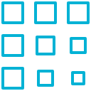

<template>
  <require from="../../blur-image"></require>

  <section class="au-animate">
    <h2>${heading}</h2>
    <div class="row au-stagger">     
      <div class="form-group">
        <div class="col-sm-9 col-sm-offset-3">
          <button type="button" class="btn btn-primary" click.delegate="trackUserAssets()">
            <i class="fa fa-plus-square-o"></i> Update Assets
          </button>
        </div>
      </div>

      <div class="col-sm-3 col-md-2 card-container au-animate" repeat.for="asset of assets">
        <div class="card">
          
          <div class="avatar">
            
          </div>
          <div class="content">
            <p class="name">${asset.name}</p>
            <p>
              <a show.bind="!asset.tracked" class="btn " href="#" click.trigger="addAsset(asset.id)">
                <i class="fa fa-plus fa-3x" aria-hidden="true"></i>
              </a>
              <a show.bind="asset.tracked" target="_blank" class="btn " href="#" click.trigger="removeAsset(asset.id)">
                <i class="fa fa-minus fa-3x" aria-hidden="true"></i>
              </a>

            </p>
          </div>
        </div>
      </div>
     
            
         
    </div>
  </section>
</template>
